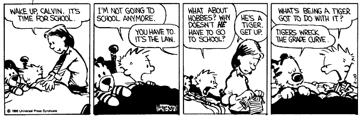

Intro
Table of Contents
- 1 Web Architecture 253
- 2 Course Goals
- 3 We'll Do Stuff
- 4 But Don't Worry
- 5 This is a Graduate class
- 6 Lectures & Labs
- 7 Office Hours
- 8 Grades
- 9 Questions?
- 10 Hi, I'm Jim Blomo
- 11 Hi, I'm Sonali Sharma
- 12 The Web is Important
- 13 The Web is Important
- 14 Why are YOU in this class?
- 15 The Web is built on composable parts
- 16 Network Stack
- 17 :slide:
- 18 Protocols: Do you speak it?
- 19 HyperText Markup Language
- 20 Javascript
- 21 Browsers show you HTML
- 22 Questions
- 23 Break
1 Web Architecture 253
- Jim Blomo & Sonali Sharma
2 Course Goals
- Address Bar -> Web Page
- Challenges building Web Apps
- Leverage existing technology
3 We'll Do Stuff
- 11 Homework Assignments
- 1 Projects: Building a simple web app
- lecture, break, lecture, break, lab -> homework
- Python
3.1 Homework Details notes
- HW and projects due at midnight Thursday before class
- Each 24 hours late == 10% off
- HW & Projects most often turned in by GitHub
4 But Don't Worry
- This isn't a programming class
- Grades are based on understanding of the concepts, not the craziest app
- Sonali & I are here to help
5 This is a Graduate class
- Perform well without supervision
- Readings will mostly come from documentation and online guides
- TMTOWTDI
- Getting frameworks working on your computer
5.1 Style notes
- More firehouse than spoon feed, you'll need to follow up for understanding
- In exchange, grading will be relaxed and check for understanding
- Honor system: No copying code or answers. Helping each other with concepts is encouraged, but document it.
6 Lectures & Labs
- Start with Q&A for at least 10 minutes
- Expect to be asked a question
- Breaks
- Stick around and get the first question of HW done
- Slides on http://jblomo.github.io/webarch253/
6.1 Helpful tips notes
- Helpful to me if you say your name
- Sorry, I tend to forget names
- If I am not calling on you, check to make sure you are on the class list!
- I'm not taking attendance, but let me know if you can't make it so I won't call on you, Bueller Bueller Bueller
7 Office Hours
- We'll stay after class
- or schedule a Hangout call
- Piazza
- Wait list will be processed normally until 3rd week… then I'll accept everyone who's asked or answered a question
8 Grades
- 30% Homework
- 30% Midterm
- 40% Project

8.1 Grading notes
- In the past, I've used straight grading (90 A- 92.5 A 97.5 A+)
9 Questions?
10 Hi, I'm Jim Blomo two_col

- Cal EECS
- A9 - Amazon Search
- PBworks
- Yelp
- Lecturer
11 Hi, I'm Sonali Sharma two_col
- 2nd year MIMS student
- Computer Science Undergrad
- Data enthusiast
- Dreams about having a REALLY cool self made personal webpage
- Traveller
12 The Web is Important
- Democratizes Information
- Decentralized
- Low Barrier to Entry
12.1 World Wide! notes
- People are now getting educated by Berkeley professors that have never left their home village
- I am personally upset when people are denied opportunity, the web is changing that
- Diabetes diagnosis
13 The Web is Important center
14 Why are YOU in this class?
15 The Web is built on composable parts
- Network Stack
- Internet
- HTTP
- HTML & CSS
- Scripting (eg. Javascript)
- Browsers & Devices
15.1 Why is composability important? notes
- Always dip down to lower levels for more control
- Ability to swap out components
- Gradual upgrades
- Can read HTML off a hard drive, or deliver by HTTP
- SSL can encrypt any type of traffic (HTTPS most common)
15.2 Highway vs. Railway
vs


15.3 Trade-offs notes
- You will hear a lot about trade-offs this semester
- There is no "best" technical solution for every circumstance, engineering is fundamentally about trade-offs in the current situation
- Here's an example trade-off: railway vs roads
15.4 Highway: simple, composable
- Just need something with wheels to use it effectively
- Cars can drive on any highway, but also off-road
- Bikes can use roads, too
- Uncoordinated
15.5 Railway: complected
- Must have right width gauge
- Must coordinate with other traffic
- If you upgrade one part of the system, everything else must be upgraded
- Efficient
15.5.1 Complected: to braid together notes
- Highways relatively inefficient: all cars need to power themselves individually
- traffic jams result from uncoordinated behavior
- ~10x fuel efficiency in commuter trains
- Tradeoff: flexibility for ease
- wikimedia.org
16 Network Stack

16.1 Mostly used as conceptual reference
- TCP/IP actually contains a section "Layering considered harmful"
- TCP/IP

17

17.1 Internet: A series of tubes
- Longest running computer system in the world
- Protocols are agnostic to their content
- Pieces can be upgraded incrementally
- Built on top of TCP/IP
17.1.1 Bits notes
- How many computer system do you know that have never gone completely down, or needed to be upgraded?
- Ultimately the Internet is about moving bits around.
- With that ability you can build what you want on top
- From early email to streaming movies on your phone
18 Protocols: Do you speak it?

- Protocols convey data
- Data can be interpreted as information
18.1 Metaphor notes
- Speech is a protocol: sending data via sound
- Understanding the words and their meaning in context is information
19 HyperText Markup Language

- HyperText: Text with links
- HTML is the dominant, but not only, way to link text
- HTML consists of elements, like a link or block of text
- Cascading Style Sheets (CSS) is used to modify the look of HTML
19.1 Hypertext Editing System notes
- Image shows another way to edit text
- And you thought editing with a touch interface was new
20 Javascript
- General programming language, but designed with HTML in mind
- Can "edit" HTML live on the page
- Or "draw" on a canvas
20.1 How it works notes
- Elements represent different areas
- Element attributes are manipulated
21 Browsers show you HTML
- because who wants to look at
<div class="topsearch "> <form accept-charset="UTF-8" action="/search" id="top_search_form" method="get"> <a href="/search" class="advanced-search tooltipped downwards" title="Advanced Search"> <span class="mini-icon mini-icon-advanced-search"></span></a> <div class="search placeholder-field js-placeholder-field">
21.1 Lots of things are "browsers" notes
- Many application actually embed a browser in the program and are rendering HTML
- Again: because the ideas around the Web are composable, it has spread to many areas
22 Questions
- What is a type of HypterText?
- What is a Protocol?
- What are the advantages to composability?